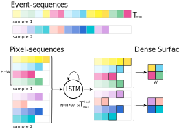
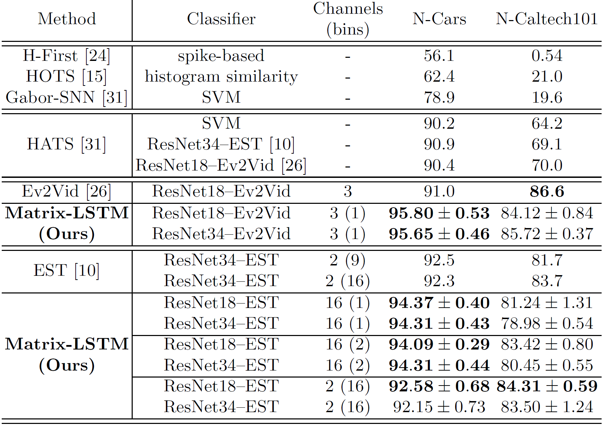
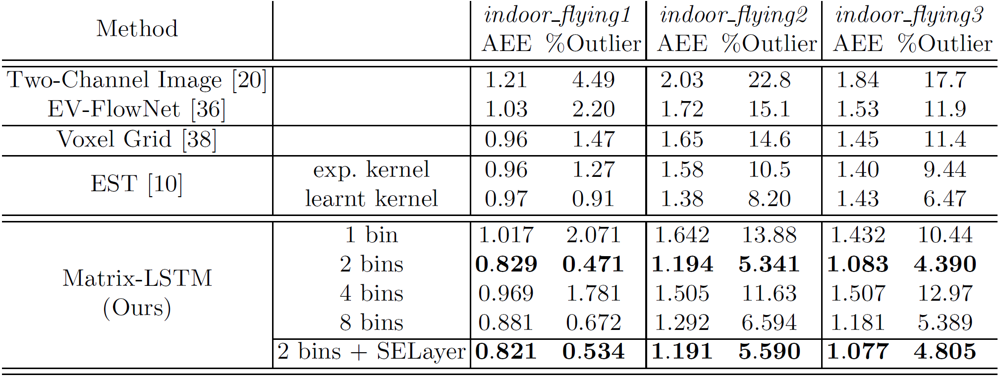

Summary: We propose a mechanism to efficiently apply a Long Short-Term Memory (LSTM) network as a convolutional filter over the 2D stream of events produced by
event-based cameras in order to accumulate pixel information through time and build 2D event representations. The reconstruction mechanism is end-to-end differentiable,
meaning that it can be jointly trained with state-of-the-art frame-based architectures to learn event-surfaces specifically tailored for the task at hand.
Abstract: Dynamic Vision Sensors (DVSs) asynchronously stream events in correspondence of pixels subject to brightness changes.
Differently from classic vision devices, they produce a sparse representation of the scene. Therefore, to apply standard computer vision algorithms,
events need to be integrated into a frame or event-surface. This is usually attained through hand-crafted grids that reconstruct the frame using ad-hoc heuristics.
In this paper, we propose Matrix-LSTM, a grid of Long Short-Term Memory (LSTM) cells that efficiently process events and learn end-to-end task-dependent event-surfaces.
Compared to existing reconstruction approaches, our learned event-surface shows good flexibility and expressiveness on optical flow estimation on the MVSEC benchmark
and it improves the state-of-the-art of event-based object classification on the N-Cars dataset.
CUDA Kernels

Inspired by the convolution operation defined on images, we designed the Matrix-LSTM layer to enjoy translation invariance by performing a local mapping of events into features.
This is implemented by sharing the parameters across all the LSTM cells in the matrix, as in a convolutional kernel.
The convolution-like operation is implemented efficiently by means of two carefully designed event grouping operations, namely groupByPixel and groupByTime.
Thanks to these operations, rather than replicating the LSTM unit multiple times on each spatial location, a single recurrent unit is applied over different sequences in parallel.
Classification
We test the Matrix-LSTM surface on the N-Cars and N-Caltech101 classification datasets. The evaluation of the goodness of Matrix-LSTM features is performed indirectly: a state-of-the-art
architecture is taken as a reference and the proposed method is evaluated in terms of the gain in performance obtained by replacing the network representation with a Matrix-LSTM.

Optical Flow Prediction
We use the Ev-FlowNet optical flow prediction network as baseline to test Matrix-LSTM features on the MVSEC optical flow task. In the following, quantitative and qualitative results are
reported, where network predictions are tested by evaluating the flow predicted between consecutive frames (dt=1), and between every four frames (dt=4).
MVSEC indoor_flying sequences with dt=1
MVSEC indoor_flying sequences with dt=4

Source Code
PyTorch and TensorFlow code for our paper is open-source and available on GitHub.
We include CUDA kernels implementations of the groupByPixel and groupByTime operations, as well as training and evaluation code of both classification and optical flow tasks.
Citation
Marco Cannici, Marco Ciccone, Andrea Romanoni, Matteo Matteucci.
A Differentiable Recurrent Surface for Asynchronous Event-Based Data.
In European Conference on Computer Vision (ECCV), 2020.
@InProceedings{Cannici_2020_ECCV,
author = {Cannici, Marco and Ciccone, Marco and
Romanoni, Andrea and Matteucci, Matteo},
title = {A Differentiable Recurrent Surface
for Asynchronous Event-Based Data},
booktitle = {The European Conference
on Computer Vision (ECCV)},
month = {August},
year = {2020}
}